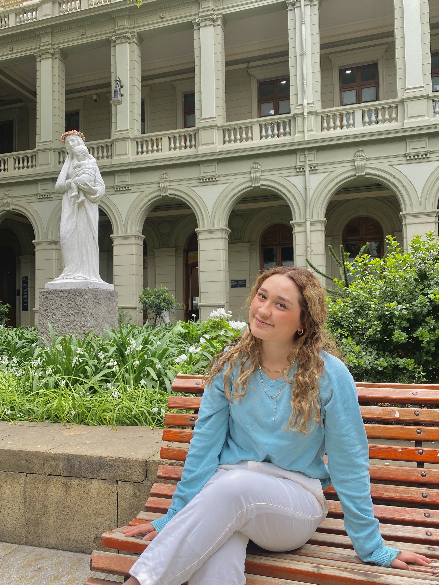

Fecha de nacimiento: 15 de julio 2003
Correo electrónico: mjo.salazar@uc.cl
Dirección: 0475 Condominio Los Parrones, Rancagua.
Agosto 2023 - actualidad
Cargo: Creador de contenido en medio de comunicación de RADIO UC
Colegio Ayelén
Actualmente en segundo año de periodismo en la Pontificia Universidad Católica de Chile
Dos semestres en Radio Uc en el programa